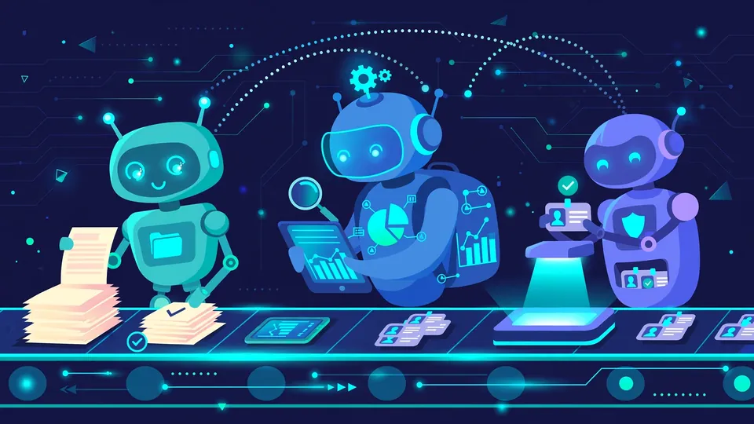

Fusemachines launches HireFoundry: one agent became an AI hiring platform with 30+ ATS integrations
Fusemachines (NASDAQ: FUSE) launched HireFoundry.ai on Thursday, a dedicated platform unifying its AI agents for talent acquisition: a shortlisting agent that scores beyond keywords, an interview agent that assists in real time, and a trust agent that flags inconsistencies — with recruiters keeping every final call.
From one agent to a platform
Fusemachines (NASDAQ: FUSE), the enterprise AI company founded in 2013, announced HireFoundry.ai on Thursday — a dedicated platform that brings together its growing suite of AI agents for hiring. What started as a single AI-powered Interview Agent grew into an Agentic AI Suite for Talent Acquisition, and HireFoundry is the next step: one identity and destination where enterprises can discover, deploy, and expand AI agents across the hiring lifecycle.
The principle, per the company: "the right AI agent for every hiring moment, with recruiters leading every step." HireFoundry is designed to sit alongside existing applicant tracking systems — it connects to more than 30 ATS platforms — so enterprises can add AI capabilities to their current recruitment workflows rather than replacing them. Since introducing the agentic suite, the company says its technology was deployed by a multibillion-dollar recruitment and workforce solutions company, and it cites positive customer feedback on interview quality, consistency, and efficiency.
The three agents
HireFoundry currently highlights three core agents covering the hiring process before, during, and after interviews:
Candidate Shortlisting Agent analyzes candidates against job descriptions and recruiter-defined criteria, looking beyond traditional keyword matching, and returns transparent scoring with supporting evidence — recruiters still decide who moves forward. Interview Agent assists during live interviews by preparing candidate-specific questions, analyzing responses in real time, and suggesting follow-ups — including for specialized roles outside a recruiter's area of expertise. Candidate Trust Agent helps identify information that may warrant a second look by comparing resumes, LinkedIn profiles, and available identity-related signals, highlighting inconsistencies while leaving interpretation and decisions to humans.
The platform's site makes the human-in-the-loop framing explicit: no agent auto-rejects, auto-advances, or scores a candidate into a final decision without a person reviewing the reasoning first. HireFoundry data is encrypted in transit and at rest, each customer gets a dedicated tenant, and — a notable design choice — the Interview Agent does not record or store audio or video. Its modular architecture lets enterprises adopt individual capabilities and expand over time as more agents arrive.

AI twins on the roadmap
Looking ahead, Fusemachines is exploring the integration of its emerging AI Twin technology into HireFoundry — AI-powered representations through which candidates and recruiters could eventually interact. The company says it will approach those capabilities with an emphasis on transparency, consent, privacy, and human oversight, "consistent with its broader vision of building AI that works alongside humans, on human terms," per HireFoundry.ai.
"What started as a single agent helping recruiters conduct better interviews has grown into a broader suite of AI capabilities, and now HireFoundry brings them together in one dedicated platform," said Giovanni Lemus, Fusemachines' Vice President of Product. Anish Joshi, Head of Technology, added that expanding from individual agents into a platform means improving their intelligence, reliability, and ability to work together.
What it means
The agentic hiring space is crowded — from embedded AI inside every major ATS to specialist startups — but Fusemachines' bet is specificity: purpose-built agents for distinct hiring moments, a platform identity to unify them, and a hard "recruiter decides" guarantee as the differentiator in a category where automated employment decision tools are drawing regulatory scrutiny. Whether HireFoundry's modular, ATS-native pitch beats the "one giant copilot" model of the incumbents is the test. For now, it has a live product, a listed company's brand behind it, and a roadmap pointing at AI twins — with human judgment, on paper at least, at the center of every hiring decision.
Sources: Fusemachines press release: Fusemachines Unveils HireFoundry.ai (Oct 15, 2026); HireFoundry.ai — product site with agent details and FAQ.